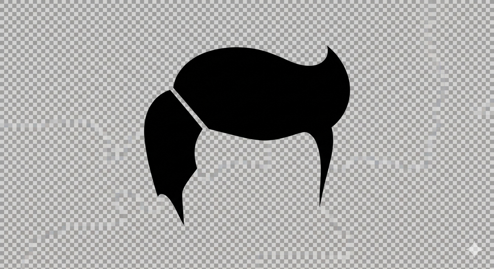

Spot Projector
Turn a projector into a practical follow spot solution for live production environments that need something simple, flexible, and ready to go.
Gelmet apps come from actual production, organizational, and workflow problems. They are designed to be practical, clear, and useful where people really work.

Turn a projector into a practical follow spot solution for live production environments that need something simple, flexible, and ready to go.
Control and rethink moving-light follow spot workflows with a more approachable, modern toolset.
Additional organization apps for camps, schools, and teams are in development under the same practical studio philosophy.